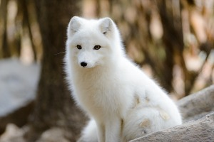

Arctic Fox
The Arctic fox, a.k.a, the white fox, or snow fox, is a small fox that belongs to the family of Canidae, native to the Arctic regions.
- Scientific Name: Vulpes Lagopus
- Size: Average of 55cm & 52cm, M/F
- Length: Up to 110 centimeters
- Lifespan: 3-6 years
- Habitat: Arctic and alpine tundra
A small fox well adapted to living in cold environments, and is best known for its thick, warm fur that is also used as camouflage.